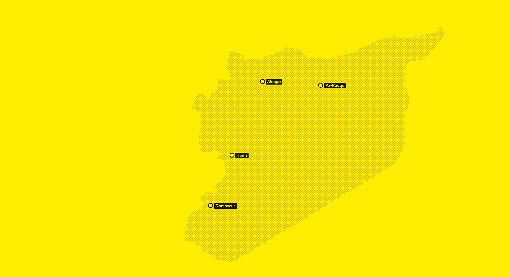

The refugee crisis in Europe is omnipresent.
But what about the fleeing Syrians that don't make it that far?
Scroll down
Syria:
a country on the move
9 millions
Syrians had to flee their homes since the start of the conflict
This is nearly half of the whole Syrian population.
Some make it across the border and become refugees.
Most of them, however, have become internally displaced.
Syrias Population
Refugees
IDPs
• ~ 10'000 Persons
«Internally displaced people legally remain under the protection of their own government,
even though that government might be the reason of their flight.»
What is an IDP?
Definition of an «IDP»
Internally displaced persons, or IDPs are among the world's most vulnerable people.
Unlike refugees, IDPs have not crossed an international border to find sanctuary
but have remained inside their home countries.
Definition of a «refugee»
A refugee, in contrast to a migrant, is according to the Geneva Convention on Refugees
applied to a person who is outside their home country of citizenship because they have
well-founded grounds for fear of persecution.
By failing to authorise access for relief agencies to those in need all parties to the conflict have violated IDPs’ basic right to request and receive protection and assistance.
Reasons for displacement
Collapsing Economy
The compounded effects of a collapsing economy, the fragmentation of the country along sectarian lines and the lack of prospects for political reconciliation are making the prospect of significant return of IDPs hypothetical.
Destroyed infrastructure
The use of heavy weapons and indiscriminate attacks, including barrel bombs, shelling, aerial bombardments and sieges, have resulted in extensive damage to infrastructure and housing, making returns or local integration unrealistic or unsustainable for the foreseeable future for hundreds of thousands of IDPs.
Shifting frontlines
The continuing shift of frontlines between the government and opposition forces, and between the hundreds of radical jihadist groups and the secular opposition, turns more and more areas into battlegrounds and forces an increasing number of Syrians to flee.
Human right violations
Deliberate violence on civilians have become a major war strategy in Syria among all belligerents.
to make it worse Syrian authorities have not only failed to protect civilians from or during displacement, but is also deliberately targeting non-combatants and preventing international aid organisation from helping people in need.
Number of displacements
A stable middle-income country that hosted refugees from all over the region just four years ago,
Syria’s internal displacement crisis has by now become the largest in the world.
The number of people fleeing armed conflict doubled between 2012 and 2013.
Thereof at least 6.5 million people, or around a third of the country’s population, were internally displaced by the end of the year.

2011
2012
2013
2014
2015
Displacement in Syria
Collapsing Economy
The compounded effects of a collapsing economy, the fragmentation of the country along sectarian lines and the lack of prospects for political reconciliation are making the prospect of significant return of IDPs hypothetical.
Phase 2: Break of the civil war
The second phase of the crisis starts in July 2012,
when armed opposition groups go on the offensive against the Syrian army,
leading to an intensification of fighting.
Flight reasons
As the peaceful protests are gradually replaced by fighting the
conflict becomes more and more a civil war.
Affected areas
violence spreading on to the capital, Damascus and to Aleppo,
the economic heart of the country and further urban areas.
Migration pattern
The sectarian dimension of the conflict has an increasing impact on displacement patterns.
As widespread areas and whole towns turn into battlegrounds, more and more people are forced to flee to IDP camps all around Syria.